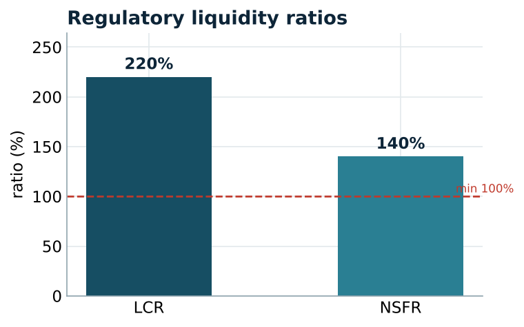
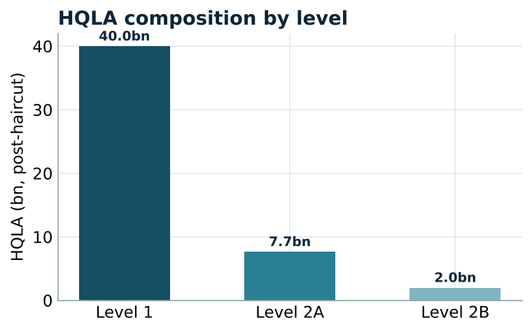
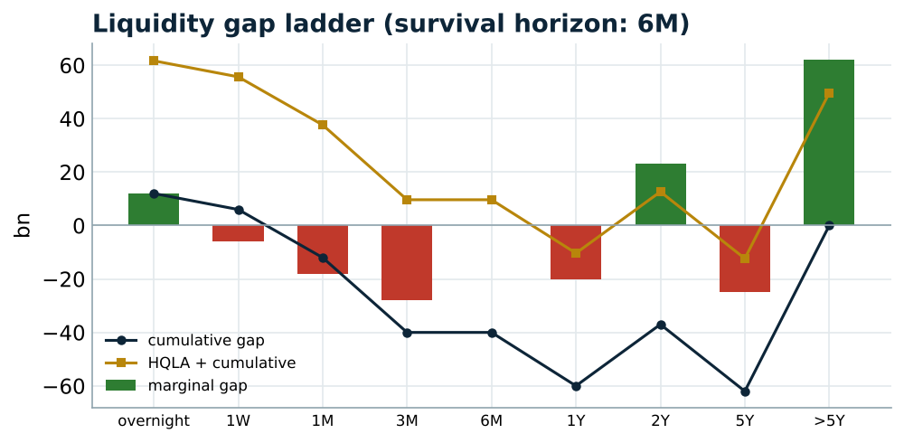
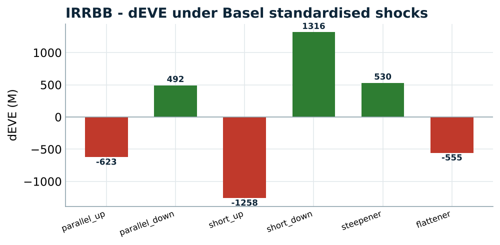

LCR, NSFR, liquidity gap and survival horizon, and IRRBB on a bank balance sheet
This project builds the core toolkit of a bank's Liquidity Risk and ALM function. From a representative balance sheet it computes the two Basel regulatory liquidity ratios (the Liquidity Coverage Ratio and the Net Stable Funding Ratio), a maturity-ladder liquidity gap with a survival horizon, and the interest-rate risk of the banking book (IRRBB) through its value and earnings sensitivities. All of it runs end to end and is shown in a public dashboard.
A bank makes money by funding long-term, illiquid assets with shorter, more liquid liabilities. That maturity transformation is the source of its profit and of its liquidity risk: if funding cannot be rolled, the bank fails even while solvent. The liquidity and ALM function measures and controls this risk. This engine implements its core metrics, from the balance sheet up to a deployed dashboard.
After 2008, Basel III introduced two binding liquidity ratios. The Liquidity Coverage Ratio ensures a 30-day survival buffer of high-quality liquid assets; the Net Stable Funding Ratio ensures structural, one-year funding stability. Alongside them, supervisors require banks to monitor the liquidity gap across maturities and the interest-rate risk of the banking book (IRRBB), with a Supervisory Outlier Test on the value sensitivity. This project places all of these side by side, which is how an ALM/Treasury second line operates.
Each module answers a specific element of the offer's Liquidity Risk Analyst mission:
| Mission | Module |
|---|---|
| Review regulatory liquidity metrics (LCR) | HQLA tiers, caps, 30-day net outflows |
| Review regulatory liquidity metrics (NSFR) | Available vs Required Stable Funding |
| Quantify & control liquidity risk of ALM | maturity ladder, survival horizon |
| Interest-rate risk of ALM activities | IRRBB dEVE / dNII, Basel shocks |
The problem the project solves: given a bank's balance sheet, show whether it can survive a 30-day stress, whether it is funded stably over a year, how long it survives on its maturity profile, and how its value and earnings move with rates. Those four questions are precisely the LCR, the NSFR, the survival horizon, and IRRBB. The sections below answer each.
A Python engine of five modules, a test suite, a reproducible notebook, and a five-view dashboard:
The engine is covered by 13 unit tests (balance-sheet integrity, HQLA caps, LCR stress response, NSFR factors, cumulative-gap consistency, repricing-gap reconciliation, dEVE shock symmetry), and the dashboard is deployed publicly on Streamlit Cloud.
Every balance-sheet item carries three tags: its HQLA level, its behavioural liquidity bucket, and its rate-repricing bucket. A key ALM choice sits here: non-maturing deposits are contractually overnight but behaviourally sticky, so their liquidity bucket is placed on a long-dated core while their repricing bucket stays immediate. Conflating the two would make the liquidity gap look catastrophic and the rate risk understated.
On this base, the LCR divides the HQLA stock, after haircuts and the Level 2 and 2B caps, by the 30-day stressed net outflows, where outflows use the Basel run-off rates by funding type and inflows are capped at 75% of outflows. The NSFR divides Available Stable Funding by Required Stable Funding, each a weighted sum over liabilities and assets. The liquidity gap nets asset inflows against liability outflows per bucket, accumulates them, and adds the HQLA stock to read the survival horizon. Finally, IRRBB reprices the banking book under the six standardised rate shocks to get dEVE, the value sensitivity, and uses the one-year repricing gap for dNII, the earnings sensitivity.
Representative balance sheet: around 170bn in assets.
| Ratio | Value | Minimum | Status |
|---|---|---|---|
| Liquidity Coverage Ratio (LCR) | 220% | 100% | PASS |
| Net Stable Funding Ratio (NSFR) | 140% | 100% | PASS |
Both ratios clear their regulatory floor comfortably: the bank holds a 30-day buffer more than twice its stressed net outflows, and its funding is structurally stable over a year.


The maturity ladder shows a survival horizon of six months: the HQLA stock plus the cumulative gap stays positive out to the 6M bucket, after which the bank would need to roll funding. This is the structural maturity transformation every bank runs, quantified.

The worst change in economic value of equity is -1,258M under the short-rate-up shock, equal to 7.4% of Tier 1 capital, comfortably within the 15% Supervisory Outlier Test limit. On the earnings side, net interest income moves about 480M for a 100bp parallel shock. The bank is asset-sensitive in the short end: rising short rates hurt value but a parallel rise helps earnings, the usual tension between the value and earnings views.

The project answers the four questions it set. The bank survives the 30-day stress (LCR 220%), is funded stably over a year (NSFR 140%), has a six-month survival horizon on its maturity profile, and its rate risk is within the supervisory limit (worst dEVE 7.4% of Tier 1). Together these are the Liquidity Risk and ALM function's core metrics, built end to end and reconciled on one balance sheet. The natural next steps are a behavioural deposit model and a dated cash-flow engine for a sharper dEVE.
Code, tests and the live dashboard: github.com/ArjiNasim/liquidity-alm-engine. Figures are reproduced in notebooks/01_liquidity_alm.ipynb.